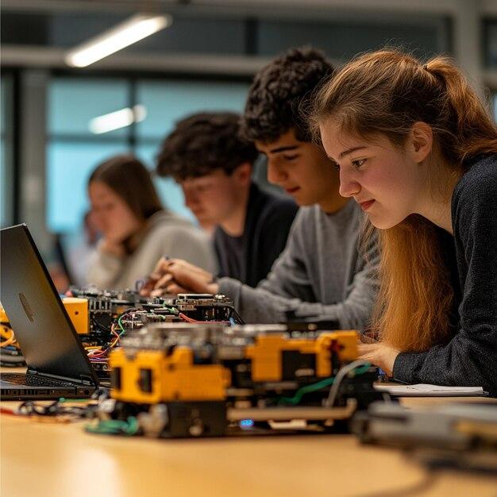

Why Grassroots Innovation Matters
Innovation doesn't always start in a high-tech lab or a large company. Sometimes it begins with a curious student, a determined entrepreneur, or a community joining forces to tackle everyday problems. These small ideas can develop into strong solutions that change lives, boost local industries, and inspire lasting change. Sustainable Development Goal (SDG) 9 promotes resilient infrastructure, inclusive industrialization, and innovation that helps everyone. Grassroots innovation is central to this vision. By supporting local talent, encouraging creative thinking, and providing chances for learning and teamwork, communities can create practical solutions that generate jobs, improve quality of life, and build a more sustainable future for all.

It's easy to think of industry and infrastructure as decisions made far away, by people with much bigger budgets than a group of students could ever have. But a large share of the innovation that eventually reshapes industries starts as small, local experimentation — a weekend workshop, a student project, a pilot scheme that proves an idea works before it scales up. For students, getting hands-on early is one of the clearest paths into careers that genuinely shape tomorrow's infrastructure.
Why This Matters to You:
Whether or not you plan to work in engineering or manufacturing, understanding how grassroots innovation supports SDG 9 helps you see how everyday actions, like joining a workshop or mentoring a peer, connect to global sustainability goals.
Programme Spotlight
Here's a closer look at the four programmes currently open for sign-up on our Feedback & Program Directory page, and how each one connects to a different part of SDG 9's mission.
Innovation Bootcamp gives participants a hands-on introduction to coding, robotics, and entrepreneurship. Rather than reading about the theory, students leave having actually built something, usually a simple robot or small app. If you have an idea that could make a positive difference in the world, but you don't know how to turn it into reality, you might want to consider joining an innovation bootcamp. An innovation bootcamp is a short-term, intensive program that helps you develop your skills, mindset, and network to create and implement innovative solutions for complex problems.
Smart Infrastructure Workshop explores how sensor networks, smart traffic systems, and connected bridges are already being piloted in cities today, and what skills are needed to design the next generation of them.
Student Startup Incubator pairs students who have an early idea with mentors from local industry, helping turn a rough concept into a pitch-ready business plan over several weeks.
Green Manufacturing Program looks at how factories are redesigning production lines to cut pollution and energy waste, directly tackling the sustainable industrialisation half of SDG 9's title.
Comparing the Four Programmes
If you're not sure which programme suits you, this quick comparison highlights how they differ in focus and time commitment.
| Programme | Main Focus | Typical Duration |
|---|---|---|
| Innovation Bootcamp | Coding, robotics, entrepreneurship | One weekend |
| Smart Infrastructure Workshop | Sensors, smart transport systems | Single-day session |
| Student Startup Incubator | Business planning, mentorship | Six weeks |
| Green Manufacturing Program | Sustainable production, clean tech | Two-week placement |
The Role of Technology in Community Projects
What ties all four programmes together is that none of them treat technology as the end goal, it's the tool that makes the underlying problem solvable. Sensors don't matter on their own; what matters is that they let a city council spot a failing bridge joint before it becomes dangerous. Code doesn't matter on its own; what matters is the business it lets a student launch.

This is exactly the mindset SDG 9 is trying to encourage: innovation measured by the problems it solves for people, not by how impressive the technology sounds on its own.
How You Can Get Involved
None of these programmes require a technical background to join, they're designed to teach the skills as you go. If any of the four spotlighted above caught your interest, follow the steps below to get started.
Looking Ahead
Community-driven programmes like these won't replace large-scale infrastructure investment, but they do something that top-down projects often can't: they build a pipeline of people who understand both the technical and human sides of industry and infrastructure from the very start of their careers. That's a foundation SDG 9 depends on just as much as any single bridge or factory upgrade.